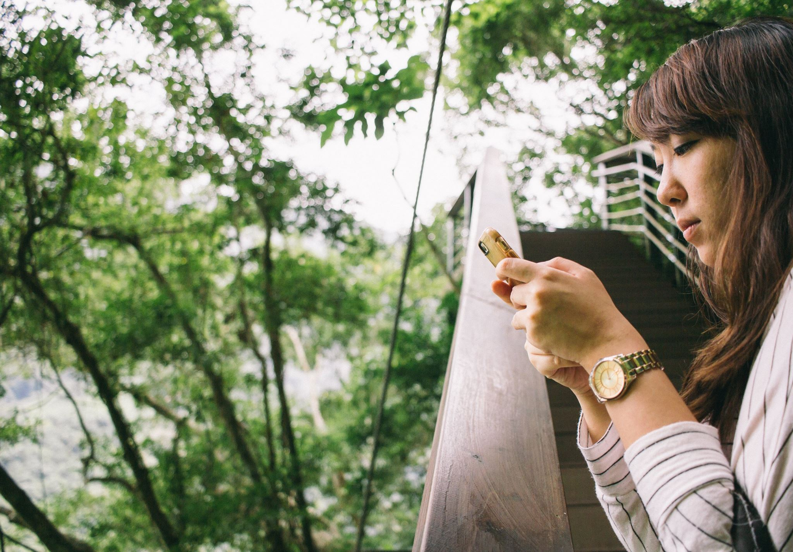

CATHERINE CHANG
Hello there!
My name is Catherine Chang, and I am currently a second year at UC Berkeley. I grew up in the heart of Silicon Valley, in Cupertino, California, but I actually traveled back and forth between Taiwan and America when I was younger because my parents wanted me to learn Chinese.
I am a second year computer science major, and my interests lie somewhere between UI/UX design and product management. I aspire to find ways to effectively combine computer science, business marketing, and digital aesthetics to promote the development of meaningful connections between people and improve lifestyle convenience.
In my spare time, I like to play the piano, learn how to cook, and watch fashion and makeup tutorials on YouTube. I have a guilty pleasure of eating ice cream by the heater in the wintertime. I also have an obsession with the color white and swimmingpool blue. You can find them all over my designs.
